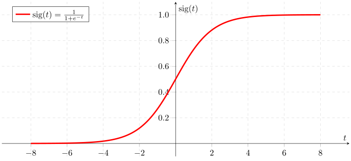

Maximum likelihood estimation
1 Problem
We need to estimate probability density p(x) of a random variable from observed values.

2 Approach
We will use idea of parametric distribution estimation, which involves choosing the best parameters, of a chosen family of densities p_\theta(x), indexed by a parameter \theta. The idea is very natural: we choose such parameters, which maximizes the probability (or logarithm of probability) of observed values.
\arg \max\limits_{\theta} \log p_\theta(x) = \theta^*
2.1 Linear measurements with i.i.d. noise
Suppose, we are given the set of observations:
x_i = \theta^\top a_i + \xi_i, \quad i = [1,m],
where
- \theta \in \mathbb{R}^n - unknown vector of parameters
- \xi_i are IID noise random variables with density p(z)
- x_i - measurements, x \in \mathbb{R}^m
Which implies the following optimization problem:
\max\limits_{\theta} \log p(x) = \max_\theta \sum\limits_{i=1}^m \log p (x_i - \theta^\top a_i) = \max_\theta L(\theta)
Where the sum goes from the fact, that all observation are independent, which leads to the fact, that p(\xi) = \prod\limits_{i=1}^m p(\xi_i). The target function is called log-likelihood function L(\theta).
2.1.1 Gaussian noise
p(z) = \dfrac{1}{\sqrt{2 \pi \sigma^2}} e^{-\frac{z^2}{2 \sigma^2}}
\log p(z) = - \dfrac{1}{2} \log (2 \pi \sigma^2) - \dfrac{z^2}{2 \sigma^2}
\begin{split} L(\theta) &= \sum\limits_{i=1}^m \left[ - \dfrac{1}{2} \log (2 \pi \sigma^2) - \dfrac{(x_i - \theta^\top a_i)^2}{2 \sigma^2} \right] \\ &= - \dfrac{m}{2} \log (2 \pi \sigma^2) - \dfrac{1}{2 \sigma^2} \sum\limits_{i=1}^m (x_i - \theta^\top a_i)^2 \end{split}
Which means, the maximum likelihood estimation in case of gaussian noise is a least squares solution.
2.1.2 Laplacian noise
p(z) = \dfrac{1}{2a} e^{-\frac{|z|}{a}}
\log p(z) = - \log (2a) - -\dfrac{|z|}{a}
\begin{split} L(\theta) &= \sum\limits_{i=1}^m \left[ - \log (2a) - -\dfrac{|(x_i - \theta^\top a_i)|}{a} \right] \\ &= - m \log (2 a) - \dfrac{1}{a} \sum\limits_{i=1}^m |x_i - \theta^\top a_i| \end{split}
Which means, the maximum likelihood estimation in case of Laplacian noise is a l_1-norm solution.
2.1.3 Uniform noise
p(z) = \begin{cases} \frac{1}{2a}, & -a \leq z \leq a, \\ 0, & z<-a \text{ or } z>a \end{cases}
\log p(z) = \begin{cases} - \log(2a), & -a \leq z \leq a, \\ -\infty, & z<-a \text{ or } z>a \end{cases}
$$
L() = \begin{cases} - m\log(2a), & |x_i - \theta^\top a_i| \leq a, \\ -\infty, & \text{ otherwise } \end{cases}$$
Which means, the maximum likelihood estimation in case of uniform noise is any vector \theta, which satisfies \vert x_i - \theta^\top a_i \vert \leq a.
2.2 Binary logistic regression
Suppose, we are given a set of binary random variables y_i \in \{0,1\}. Let us parametrize the distribution function as a sigmoid, using linear transformation of the input as an argument of a sigmoid.

\begin{split} p(y_i = 1) &= \dfrac{\text{exp}(\theta_0^\top x_i + \theta_1)}{1 + \text{exp}(\theta_0^\top x_i + \theta_1)} \\ p(y_i = 0) &= \dfrac{1}{1 + \text{exp}(\theta_0^\top x_i + \theta_1)} \end{split}
Let’s assume, that first k observations are ones: y_1, \ldots, y_k =1, y_{k+1}, \ldots, y_m = 0. Then, log-likelihood function will be written as follows:
L(\theta_0, \theta_1) = \sum\limits_{i=1}^k (\theta_0^\top x_i + \theta_1) - \sum\limits_{i=1}^m \log(1 + \text{exp}(\theta_0^\top x_i + \theta_1))
3 References
- Convex Optimization @ UCLA by Prof. L. Vandenberghe
- Numerical explanation